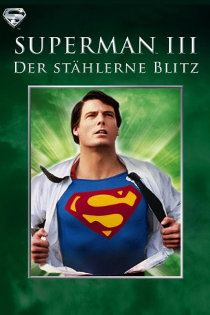

#10215 Superman III - Der stählerne Blitz
Alternativ: Superman III (Englischer Titel)
 
 IMDB-Wertung: 4.9 / 10
IMDB-Wertung: 4.9 / 10  Metascore: 44
Metascore: 44 
Der wohlhabende Geschäftsmann Ross Webster engagiert den Computerfreak Gus Gorman, um seine Talente zum Zusammenbruch der Weltwirtschaft zu nutzen. Als Superman dazwischenfunkt, setzt Webster synthetisches Kryptonit gegen den Mann aus Stahl ein, was den Superhelden in einen Bösewicht verwandelt. Jetzt liegt es an Clark Kent, die Welt zu retten.
Jahr: 1983
Dauer: 124 Minuten
FSK: 12
Land: England Studio: Cannon Screen EntertainmentTonspuren: DD2.0 - ,
Untertitel:
Auflösung: 1080p (1920x800) Größe: 6799 MB
Genre: Action, Sci-Fi, Komödie
Regisseur: Richard Lester
Drehbuch: Jerry Siegel, Joe Shuster, David Newman, Leslie Newman, Mario Puzo
Soundtrack: Ken Thorne
Darsteller:
Datei: X:\Comic-Filme\Superman\Superman III - Der stählerne Blitz (1983, FSK12, 1920x800).mkv seit 23.12.2018
Festplatte: Comicverfilmungen+MusikCD
 Es gibt insgesamt 10 Filme in der Gruppe 'Comic-Filme\Superman'
Es gibt insgesamt 10 Filme in der Gruppe 'Comic-Filme\Superman'